Custom ROOter Images
Customized ROOter Firmware
If you are reseller of routers or supply routers as part of providing Cellular Internet to people, it is possible to have a custom ROOter firmware made that reflects your needs. A large number of areas can be customized to make the firmware unique to your company. A number of companies already avail themselves of this service and are pleased with the results.
Used by
For a quote on creating a custom ROOter firmware please contact Ralph at dairyman@rfactory.org
Let me know in the email if this is for private use or if it is to be used in routers that are distributed commercially.
Private use is defined as an individual with 1 or more routers who has them for his own personal use. The firmware is not used by anyone other than the individual. Commercial use is defined as those people who are reselling routers with the firmware on them or rural Internet Providers who supply a router and modem to their customers. The firmware is used by more than one individual.
This is important to know as there is a difference in cost and level of service between private and commercial firmware.
If you do not receive a reply in 2 days please check your spam folder.
The custom features that can be added to a ROOter firmware include the following.
1. Custom GUI Logos
Change the logos used on the login page and on the header of the GUI. Instead of the usual ROOter logos you can subsitute your own logos to make the GUI your own. A example of such a change for the login page.
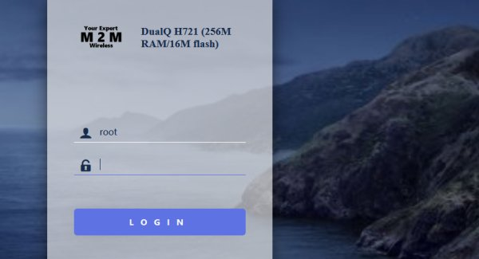
It is also possible to change the background image of the log in page to your own image.
Here is a logo change for the Material theme.
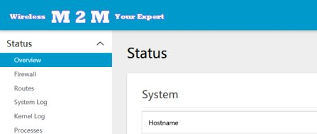
And here is a logo change for the Tomato theme.
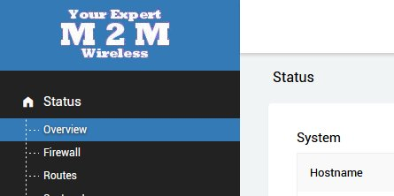
2. Custom Router Name
The router name that is displayed on the login page and the GUI header and the model name shown on the Overview page can be changed to any name you wish. This can reflect your company or pretty much anything else. An example of a custom router name that will show on the login page and on the GUI header.
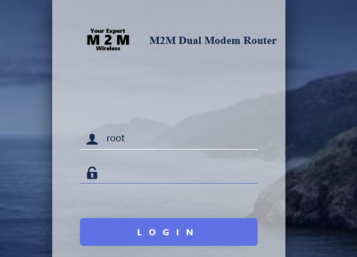
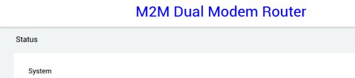
3. Default Wifi SSID and Password
The default SSID and password for the router's wifi can be changed from those normally used by ROOter to ones of your choice. These are still changable via the GUI but the router will show these default values after flashing. There can be separate SSID for 2Ghz and 5Ghz wifi. The password is the same for both.
4. Modem Band Locking
For certain modems there is a feature that allows you to lock the modem to use only certain bands. This can be used to force the modem to do CA with specific bands or to lock out bands that are weak but have the modem connect to them anyway. The following is from a modem that does not support CA.
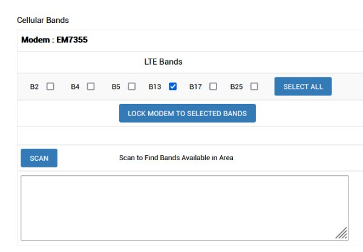
Select the bands you wish the modem to work with and lock the mode to those. The Scan button will scan the area for other cells and display them for you. This allows you to see what bands are usble in your area.
Next is a modem that supports 2xCA. It will show the 2xCA combinations supported by the modem. If they are dark then the current band selection supports them. If they are light then it does not. If the modem supports 3xCA then a button will appear to switch between 2xCA and 3xCA.
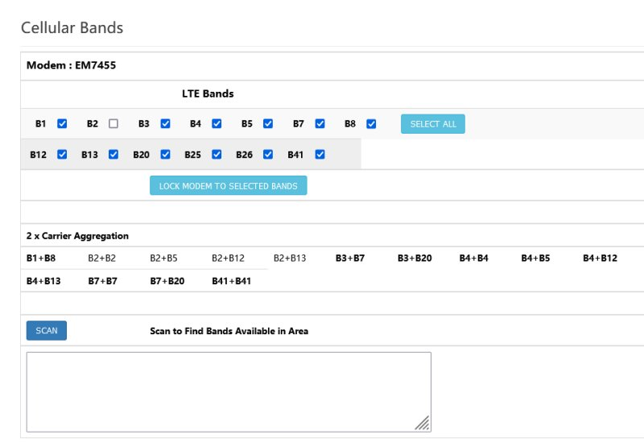
Lastly there are the modems that support 5G. You can select from LTE bands and 5G bands. The CA combinations are not shown because of the large number of combinations.
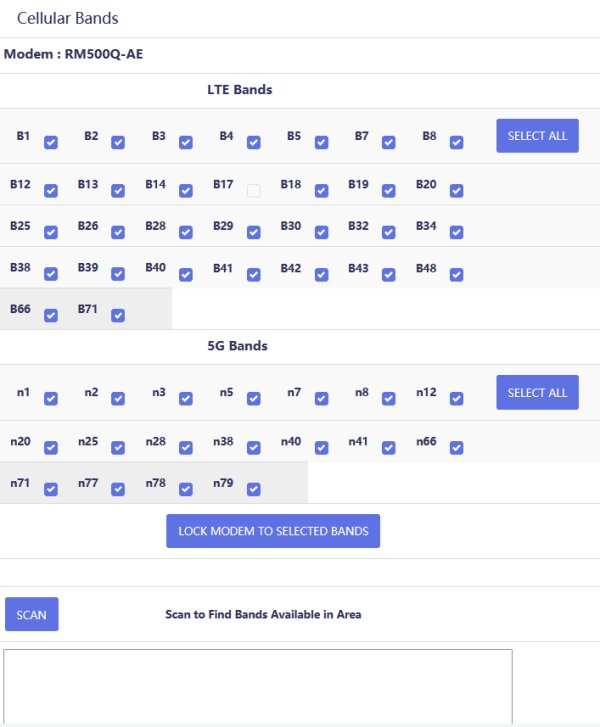
Not all modems have support for band locking. Those that are supported are :
Sierra EM/MC73xx Sierra EM/MC74xx Sierra EM7565 Sierra EM7411 Sierra EM7511 Fibocom L850 Fibocom L860 Fibocom FM150 Quectel EC25 Quectel EP06 Quectel EM12 Quectel EM20 Quectel EM160 Quectel RM500Q
5. Remove SMS
For those that don't have SMS on their plans the entire SMS menu can be removed.
6. Default Theme
The default theme that the GUI uses after it is flashed can be set to Material, Argon or Tomato. Each has a different look and some prefer one and some prefer an other.
7. Network Status Speed
By default the Network Status page refreshes every 60 seconds with the option to change it to 10 seconds. This can be changed to a default 10 second refresh speed with the option to change to 60 seconds.
8. GUI Password
By default the GUI has no password after the router has been flashed. If desired, the GUI can be given a default password so it is protected after flashing.
9. TTL Value
By default no TTL value is set for the router. A default TTL value can be set so it is activated right after flashing.
10. SIM Locking
If the SIM used is PIN locked then it can be automatically unlocked when the modem begins the connection process. This stops the user from seeing what the Pin unclock code is.
11. Zerotier
For those that wish remote access to the router using Zerotier it can be installed with a preset Network ID.
12. Custom Ping Test
A custom ping test package is available that will check the Internet connection and, if it drops, will restart the modem and, if that fails, reboot the router. The setting for this package are customizable from the GUI.
13. AT Command Terminal
The AT Command Terminal can be configured so the user only has access to a limited number of commands. An password is required to unlock the normal command terminal so all commands can be entered. This is the terminal when it is locked to specific commands.
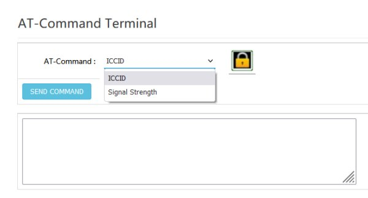
This is after unlocking it.
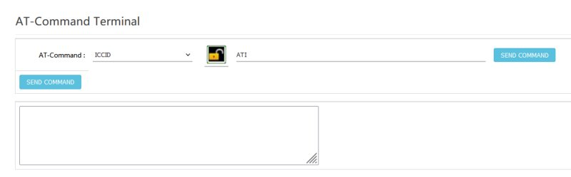
14. SSH Access
SSH access to the router can be limited to the use of a SSH key to stop all unauthorized SSHing into the router. Only someone with the key can have SSH access to the router.
15. Live Network Status
A login splash screen can be added that will show information from Network Status without having to log into the GUI. This is larger and easier to read than the normal Network Status GUI page.
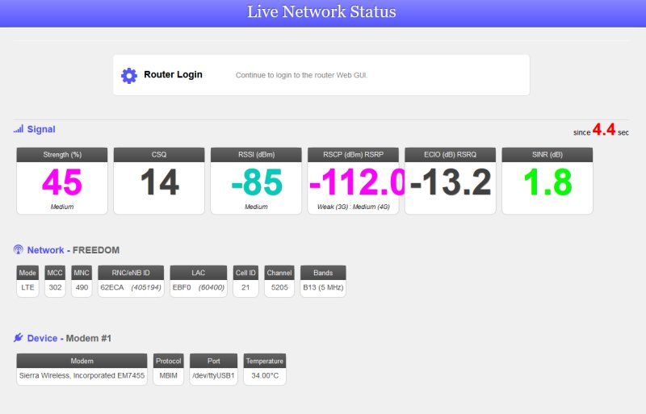
16. Bandwidth Monitor
An extension can be added to the regular ROOter Bandwidth Monitor so a maximum amout of monthly bandwidth can be allocated and the Internet will terminated until the start of the next month if this is exceeded. An unlocking code is needed to adjust the amount of allocated bandwidth so this can be done remotely or if a different plan is being used. This is the bandwidth monitor showing the allocated amount and the currently used amount.
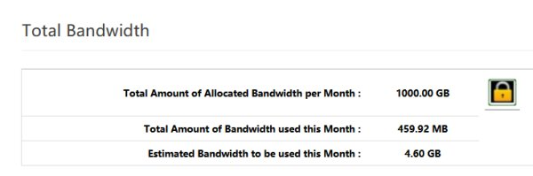
And this is when it is unlocked to change the allocated amount.
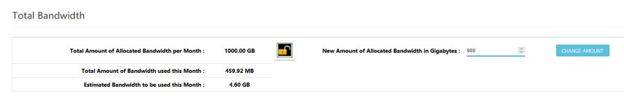
17. Other Features
Other features can be implemented at an extra cost which depends on the complexity and time required to make it.